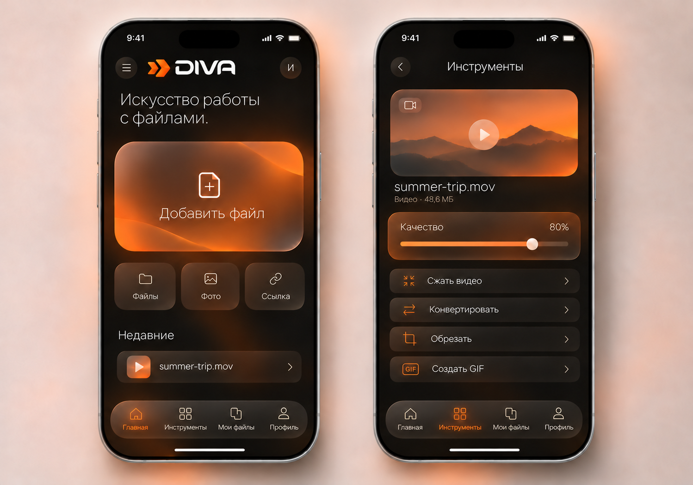
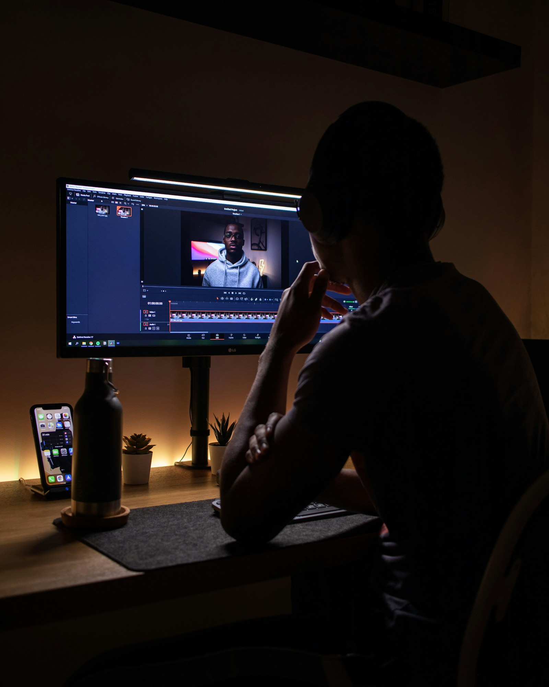

Документы
Конвертируйте DOCX в PDF, чтобы файл открылся в нужном виде.
DOCX→PDF
Искусство работы с файлами.
Прокрутите страницу, чтобы повернуть сферу. Нажмите на файл и выберите действие в приложении.

Потяните телефон, чтобы повернуть его.
Короткая демонстрация: ролик переходит в DIVA, пользователь выбирает качество и открывает сохранённый файл.
Видео · 480p · сохранено в DIVA
Анимация показывает предполагаемый путь пользователя. В сцене проигрывается ролик Yaroslav Shuraev / Pexels; реальная загрузка с YouTube не выполняется и зависит от прав на видео и правил платформы.
Каждый инструмент отвечает на конкретную задачу. Без списка функций, в котором приходится разбираться.
Конвертируйте DOCX в PDF, чтобы файл открылся в нужном виде.
Меняйте PNG на JPEG для отправки, публикации или экономии места.
Добавьте ссылку на доступный ролик и сохраните видеофайл.
Обрежьте запись и оставьте только нужный фрагмент.

РАБОЧИЙ МАТЕРИАЛ / 04После загрузки, конвертации или обрезки результат остаётся в DIVA. Отдельный пункт «Мои файлы» в нижнем меню ведёт к сохранённым документам, изображениям, видео и аудио.
На главном экране — добавление файла, фото или ссылки. После выбора материала — инструменты. «Мои файлы» доступны из нижней навигации.
Операции с файлами уже выполняет Telegram-бот. Лендинг показывает, как те же задачи могут быть организованы в iPhone-приложении.
Повторить демонстрацию